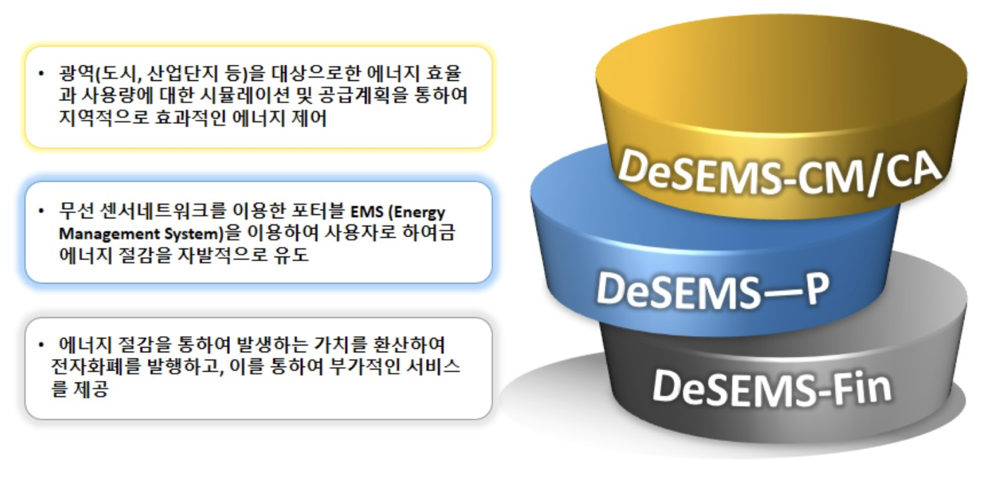
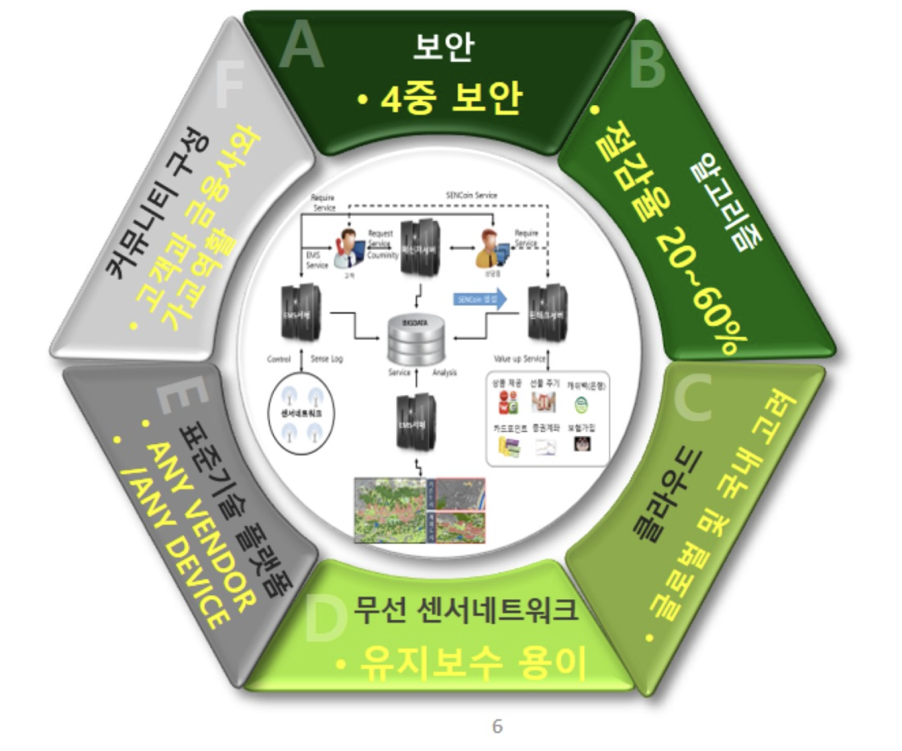
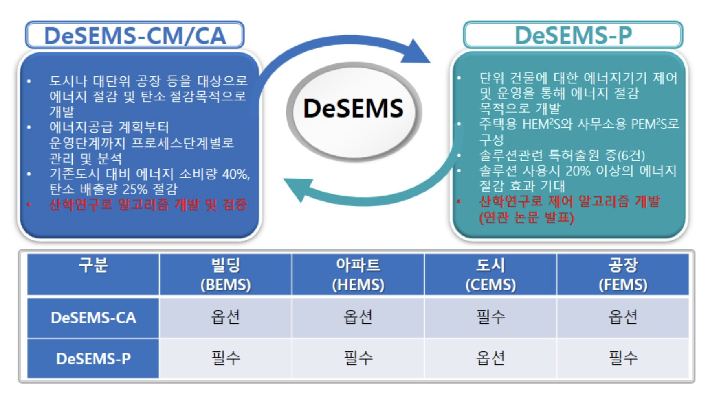
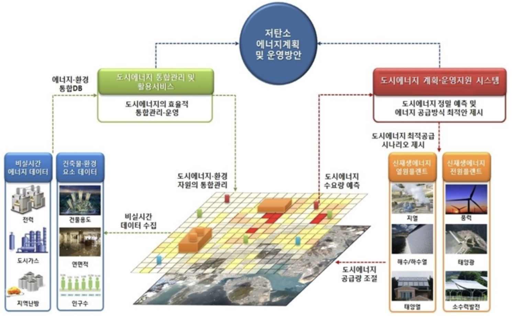
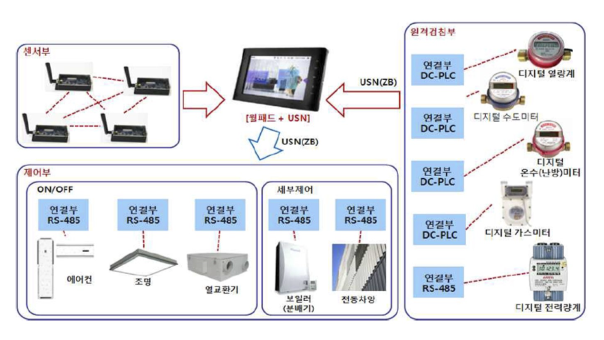
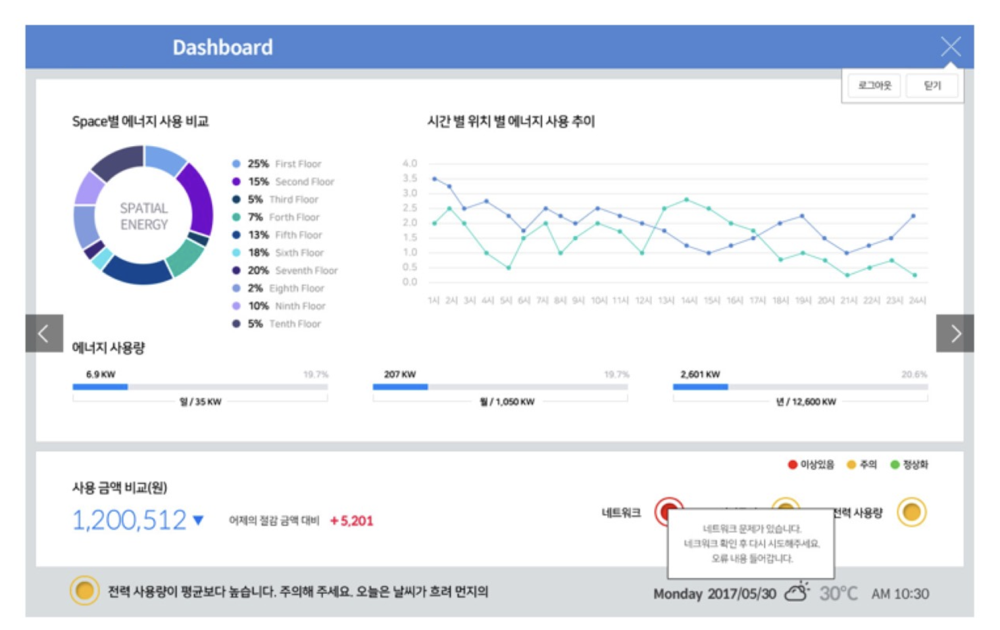
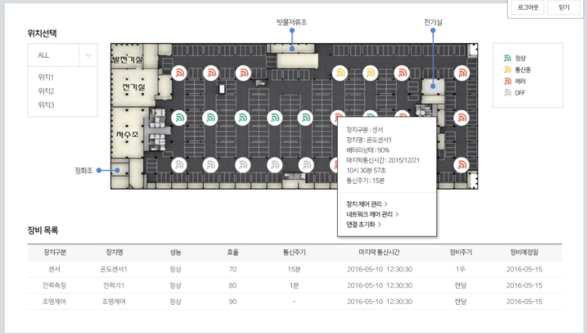

-
이메일이 클립보드에 복사되었습니다.

에너지 혁신과 4차 산업혁명의 중심에서 첨단 기술을 바탕으로 지속 가능한 발전을 이끌어 갑니다.
4차 산업혁명과 에너지 혁명 속에서 고객 맞춤형 솔루션으로 미래를 선도합니다.
대기업은 대기업 중심의 단방향 사업 전략을 추진 중입니다. 하지만 당사의 제품은 양방향 플랫폼을 통해 다른 기업과 협업 및 상생이 가능합니다. 또한, 당사 제품은 모듈 형식으로 제공할 수 있는 것이 큰 특장점이며, 국내뿐만 아니라 해외 수출도 용이합니다.
올해 스마트 공장 사업을 통해 목표 매출 20억 원 중 설립 2달 만에 15%를 달성하였습니다. 현재 민간기업을 대상으로 IT 컨설팅 및 통합 시스템 구축 사업을 추진 중이며, 목표 매출은 25억 원입니다. 차별화된 IT 구축 기술을 통해 통합 시스템을 구축하여 공장주들의 개별 니즈를 만족시킬 수 있습니다.
10년 이상 초·중·고 학교를 대상으로 오프라인 사업을 추진해 온 경험을 바탕으로, 기업 대상으로 전체 IT 부문을 수주하고 있습니다. 당사는 컨설팅(기업 분석), SI(시스템 구축), ITO(운영·유지 보수)를 담당하며, 상기 기업의 협력 업체까지 스마트 공장 사업을 필두로 SI 사업을 추진할 예정입니다.
끊임없는 도전과 성과의 기록 지속 가능한 미래를 향해 나아갑니다. 우리가 걸어온 길을 통해 비전을 제시합니다.
2024년 1월
2024년 2월
2024년 3월
2024년 4월
2024년 5월
㈜FUTUREWORK는 IT경력 20년 이상의 전문가들과 같이 스마트 사업을 주도
하고 있습니다.
플랫폼 사업은 현재 다른 IOT 플랫폼 솔루션 기업의 개발 총괄 및
유지보수를 수행 중이며, 인프라 사업 또한 4,400평 규모의 신축공장의
태양광/냉.난방/공조(냄새-분진-미세먼지 제거포함)까지 추진중이라 비록
연혁은 짧지만 내실 및 성장성이 큰기업입니다. 더 나아가 자타가
공인하시는 자문단을 모시고 더욱더 매진하겠습니다.
지속 가능한 혁신과 성장을 목표로 미래를 이끌어 갈 수 있는 비전을 제시합니다.
법인 설립
국가기관 공급기업등록
국가기관 사업추진
국가기관 사업 활성화
- 스마트공장 수주
- 데이터바우처 가공 및 판매 기업
- 스마트시티 사업추진
- 스마트 산업단지추진
스마트공장 구축
스마트산단 사업 구축
시행사 및 시공사 통한 스마트사업 구축
SI사업 추진
글로벌화를 위한 외부 투자유치
스마트시티 사업통한 플랫폼화
- 시스템 모듈화
- 표준화
SI사업 활성화
- 플랫폼 확장통한 SI추진
다국적 언어용 제품출시
국내.해외 채널 및 대리점
IPO통한 글로벌 기업전환
효율성과 지속 가능성을 모두 갖춘 솔루션으로 미래의 스마트 산업단지와 교통 시스템을 설계합니다.
DeSEMS 솔루션은 에너지 절감 관리와 핀테크를 결합하여 고객에게 가치를 고도화하기 위한 서비스를 제공하는 Platform입니다.
핵심 기술
- 종합 에너지 관리, 에너지 절감 가치 고도화, 고유 에너지 절감 알고리즘, 국제 표준 기술적용
핵심 제품
DeSEMS-CA/CM 개념도
- 도시계획 초기단계에서 저탄소 에너지 계획을 위한 도시 미기후 및 에너지 주체에 대한 GIS기반 수요예측 설계 툴입니다.
DeSEMS-PH/W 운영 체계도
- DeSEMS-P 제품은 센서부, 제어부, 원격검침부, Middleware, 모니터링 Client로 구성되었습니다.
DeSEMS P 주요 기능 (Dashboard) : 고객 제공용 관리 화면 (현재) , • 건물의 에너지 소비와 관련된 각종 데이터의 획득, 전달, 수집 및 관리를 통해 건물 층별 에너지 소비내역 및 전일 비교 감금액, 전력 사용량과 네트워크, 서버 상태를 쉽게 파악할 수 있도록 정보제공
DeSEMS-P 주요기능 (설비현황) : 고객 제공용 관리 화면 (현재)
운영자가 건물에서 운용되는 각종 설비의 운전상태와 성능을 쉽게 파악할 수 있도록 분석내용 제공
DeSEMS-AI
도시 및 단위 빌딩 대상으로 BigData 분석 및 머신 러닝을 통한 최적의 자동제어를 통하여 쾌적한 환경 제 공 및 에너지 절감을 실현하고 핀테크를 통한 고객에게 부가가치를 제공함